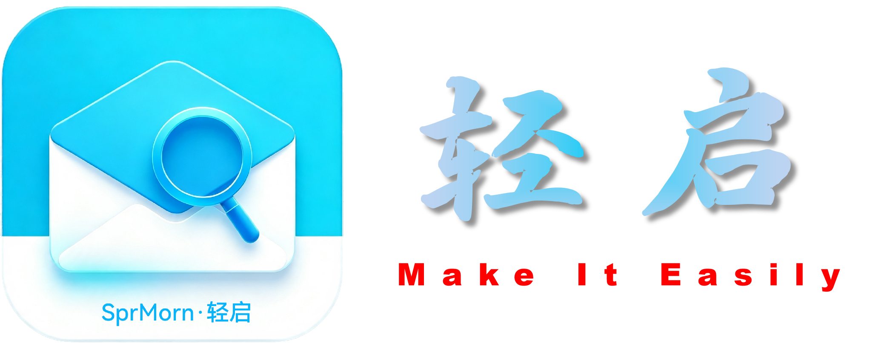
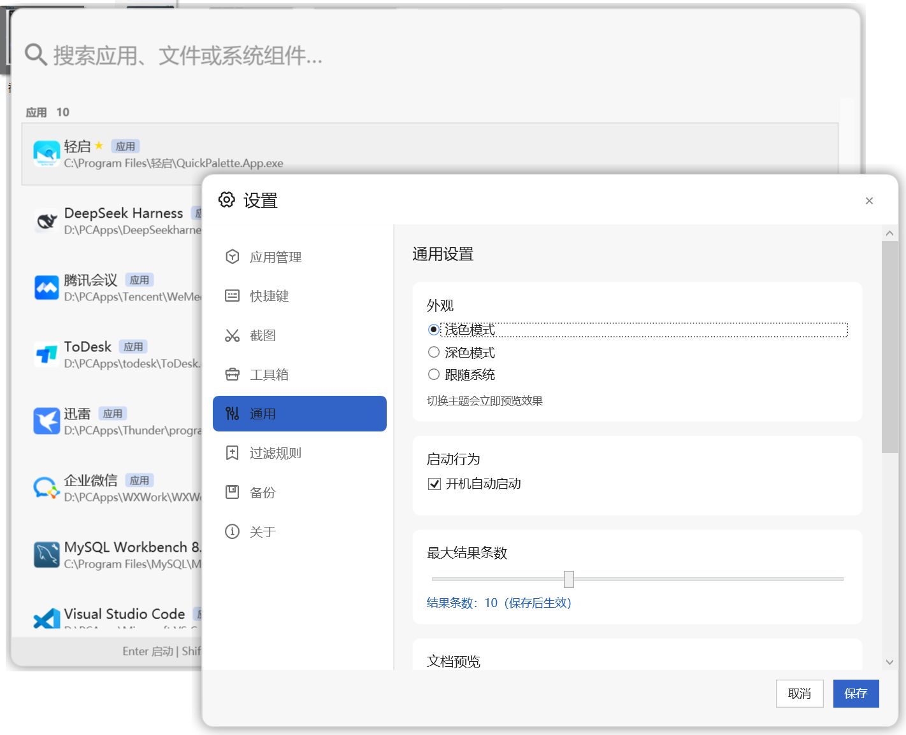
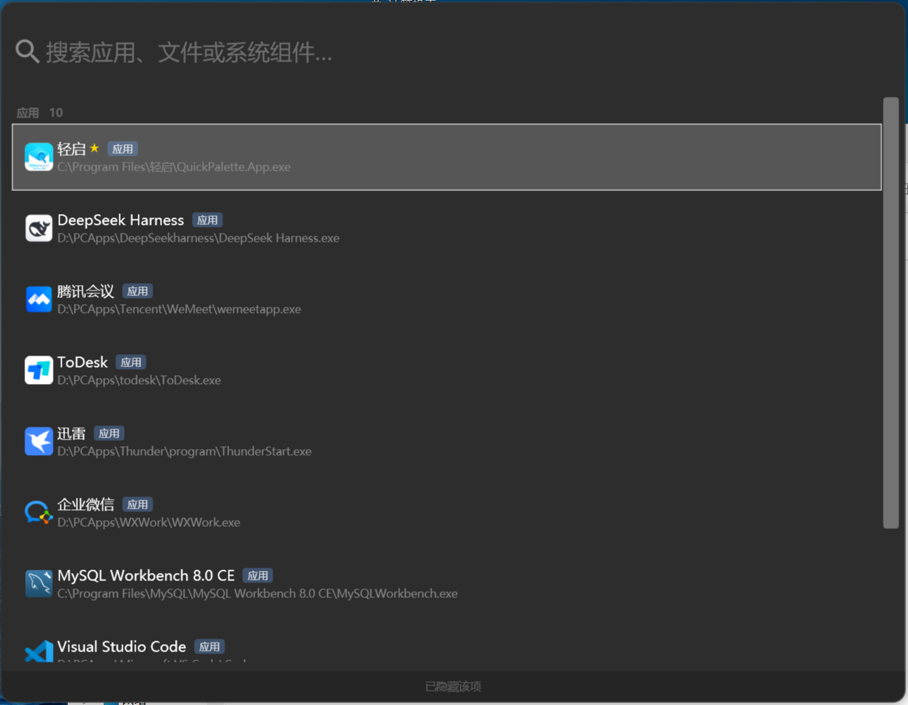
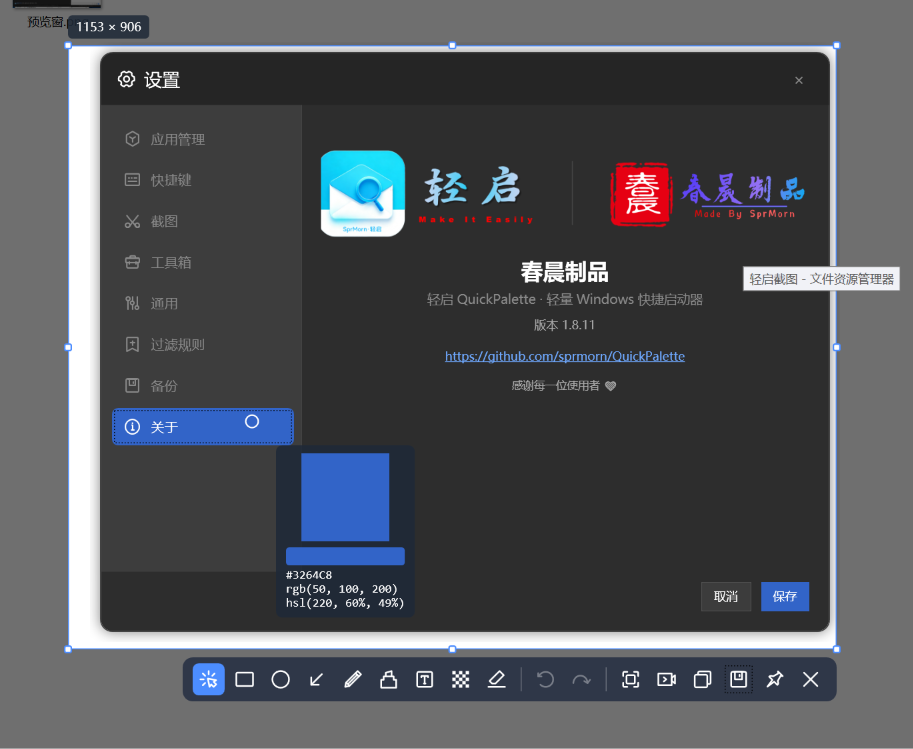
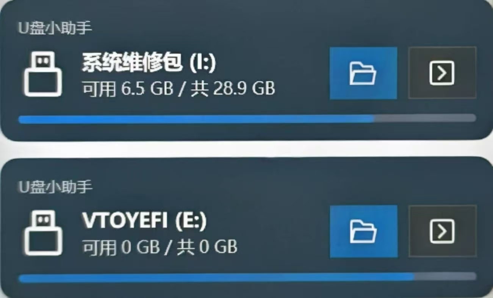
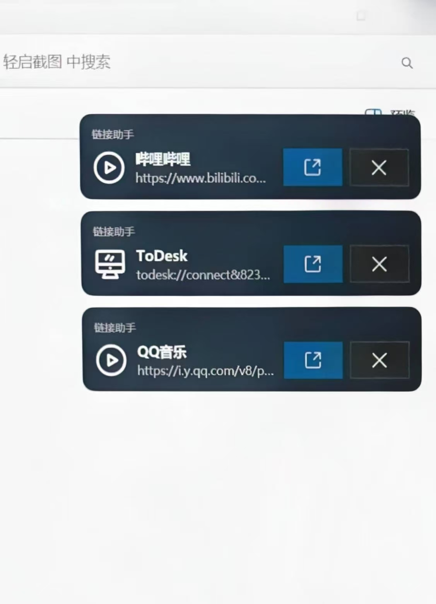
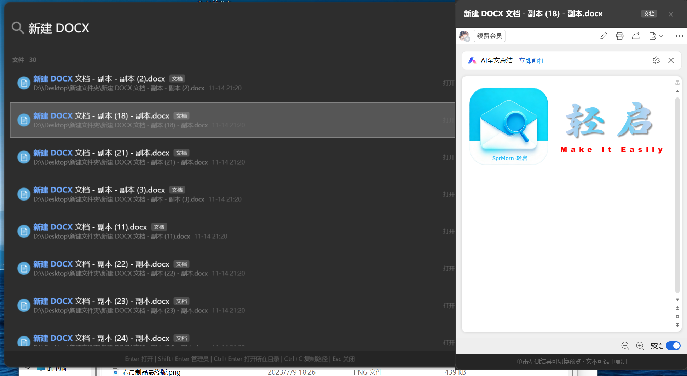
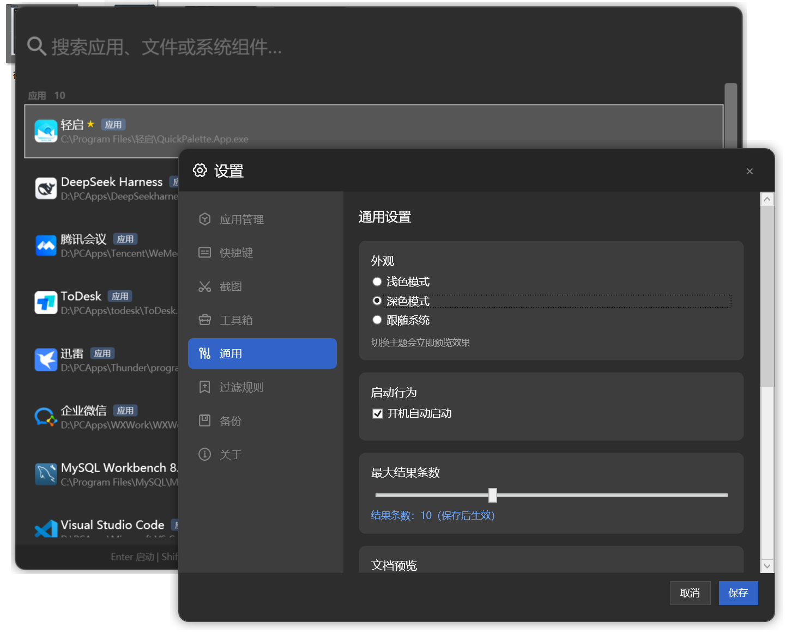
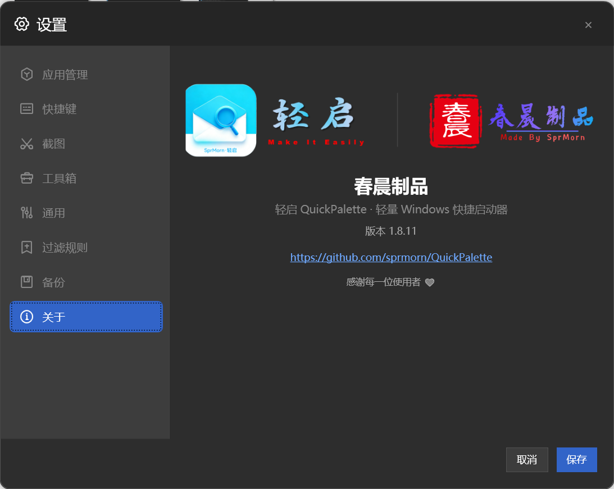
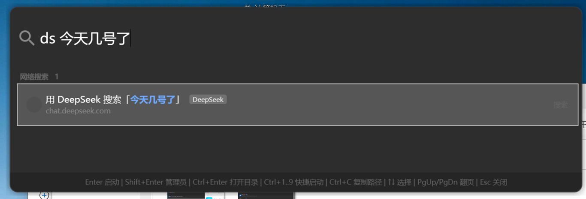

Windows 本地白名单快捷启动器 & 截图录屏工具箱
唤起、输入、回车——一步直达你想要的一切
v1.8.11 · Windows 10 / 11 x64 · 自包含免装运行时

一个窗口，装下你的高频操作
从启动软件到截图录屏，再到系统小工具——都在同一个唤起入口里。
秒开一切的快捷启动
白名单只放你真正用的软件。中文、拼音、别名都能搜：wx 找到微信，vscode 打开 Visual Studio Code。注册表、任务管理器、控制面板……40 多个系统组件直达，不用再翻开始菜单。
- 拖拽 / 运行中捕获 / 开始菜单导入，三种入库方式
- 命令模式：
>settings、>theme、>backup - 双栏设置、自动备份、深浅双主题

截图 · 长截图 · 录屏
框选截图随手标注（画笔 / 马赛克 / 文字），滚动长截图自动拼接，点一下切到录屏：区域录制、麦克风与系统声独立开关、3·2·1 倒数、录完即裁剪倍速，导出无损秒出。
- 录屏走系统级采集：游戏、视频、远程桌面都能拍
- 音画同步误差 ≈ 一个音频帧（20ms 级）
- 录制先暂存，点保存才落盘，随手可复制发送

聪明的桌面小助手
U盘一插就弹出容量卡，一键打开或弹出；复制到会议链接、网盘口令、远程协助码，右上角直接提示跳转，会议号、设备码分行可复制。还有窗口置顶、文件预览窗，都是用过就回不去的顺手。
- 链接助手识别 7 大类，官方分享格式精准识别
- 提示卡不抢焦点、对截屏隐形、自动收起
- 置顶窗口全局热键
Alt+F


处处妥帖的细节
深浅双主题一键切换，预览窗唤起系统预览处理器看图看文档，设置双栏分组清晰不迷路，网络搜索一键直达搜索引擎。本地优先：所有数据都在你自己电脑上。
- 浅色 / 深色主题，跟随你的桌面
- 预览窗支持图片、文档等系统预览格式
- 数据自动备份，可导出 / 导入

为什么是轻启
轻快不打扰
托盘常驻，全局热键随时唤起；界面克制、动效轻盈，不打断你的节奏。
本地优先
无账号、无云依赖、无遥测。数据全部存本机，自动备份随时导出。
白名单设计
只索引你放行的软件，搜索结果干净精准，绝不塞给你任何推广。
多屏 · 高DPI
任意显示缩放（100%~200%+）、多显示器、异形选区，精确贴合不偏移。
录屏专业内核
系统级采集 + 硬件编码，内存平稳如线，长时录制不掉链子。
免费开源
代码全部公开在 GitHub，欢迎 Star、Issue 与 PR，为所有人免费。
每一面都耐看
浅色、深色、设置与搜索——总有一处细节打动你。



常见问题
安装包和绿色版有什么区别？
功能完全一致。安装包会写开始菜单与可选开机自启；绿色版解压后直接运行 QuickPalette.App.exe，随拷随走。两者均为自包含，无需安装 .NET。
录屏能录游戏和付费视频吗？
录屏使用 Windows 系统级采集，游戏、本地视频、远程桌面都能录。但受 DRM 保护的流媒体内容（各平台付费内容）系统禁止任何软件录制，这是平台限制。
我的软件会收集我的数据吗？
不会。轻启无账号、无云同步、无遥测，所有配置与索引只保存在本机 %APPDATA%\QuickPalette\，并支持一键导出备份。
遇到问题或有建议怎么反馈？
欢迎到 GitHub Issues 提交反馈，或邮件联系 sprmorn666@qq.com。